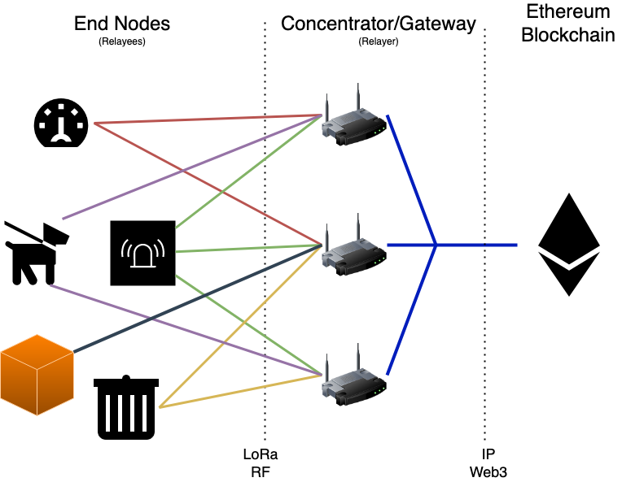

With the constraints outlined in the introduction, we can now start looking at what an LPWAN-based Ethereum interaction would look like. We’ll start by examining the network topology necessary for a decentralized application receiving data from on-the-ground end devices, followed by a practical example of how such an interaction takes place. We will assume a that we are operating with a basic Layer 1 Ethereum model using familiar ERC20 and ERC721 token transactions, though there is nothing precluding the approach from being modified to take advantage of Layer 2 scaling solutions.
By now, we’ve seen how a network topology without a centralized network server is important for blockchain applications. Fortunately for us, the concentrators are devices which are capable of communicating over the broader internet and therefore connect to an Ethereum node. Many off-the-shelf LoRa gateway solutions are based on hardware platforms capable of running an Ethereum node themselves. This means that we can start simplifying the overall network architecture — the gateways serve act as Relayers to the blockchain, and the end nodes are Relayees, having their messages relayed by the gateway. Relayers can operate as regular LPWAN gateways, but they can also test if an LPWAN packet they have received actually encodes a smart contract interaction. If it’s meaningful to do so, the relayer can submit the smart contract interaction as a blockchain transaction on the relayee’s behalf. Effectively, we have a system in which an LPWAN end node can ultimately trigger behavior on a blockchain.

FOAM Lite Network Architecture
Now that we have a high-level path towards a relayee-to-blockchain interaction, we can take stock of what challenges and opportunities are presented to us. We find that we have some critical motivations to consider that will ultimately inform the design of the messages the relayee can send, as well as certain functional requirements of the smart contracts that they will interact with.
Because we have chosen to demonstrate this approach with Ethereum, there are some additional nuances specific to the Ethereum blockchain that we have to consider in our design. Particularly, the transaction fees in Ethereum are calculated in terms of gas, which can only be paid for using the blockchain’s native currency, Ether. Unfortunately, the Ethereum blockchain by itself has no facilities to securely delegate access to the Ether balance of a user’s wallet to another user or smart contract — which means that transaction fees cannot be covered directly with Ether.
On the other hand, ERC20 tokens do have the ability to delegate control over some or all of a user’s balance of that token to another address by means of the approve() function. A particularly famous ERC20 token is known as Wrapped Ether or WETH, and is designed to be 1-to-1 exchange with actual Ether. Depending on the design requirements of the system, other similar tokens can of course be used.
Because an end node cannot readily know which relayer will be relaying their transaction a-priori, it does not make sense to simply approve a specific relayer. Moreover, simply approving a relayer would just allow that relayer to claim the approved balance without doing anything else, so that’s not really a viable solution. However, because the end node will likely know what contracts they intend to be interacting with, they can approve that specific contract to spend their ERC20 balance, and the contract can then ensure that the transaction fee makes it to the relayer if the transaction succeeds. This also adds a layer of assurance to the relayer that they will get rewarded for performing their duties.
Because we are using an ERC20 token, the end node will need to have some balance of that token, and will need to have somehow approved the smart contract they’re interacting with to spend that token on their behalf in order to pay the relayer. This means a small amount of ETH would need to be held by the end node as well. This may pose some logistical challenges when considering mass deployments/fleets of end nodes. For the sake of illustrating the technique, we will demonstrate a set of FOAM Lite interactions using an ERC20 token transaction fee in the message. However, smart contracts can be designed such that other means of paying the transaction fee are used. For example, a particular application can keep an on-chain registry of end node addresses that comprise their fleet, and have their particular smart contracts pay out relayers for relaying messages from those nodes. This would radically simplify fleet deployment and management. The end node would not need to periodically have its individual transaction fee balance replenished and the smart contract somehow reapproved to spend the new balance. This would also mean that the transaction fee can be elided from the end node’s message, enabling a larger payload, as well as allowing the overall application to be more responsive to gas market conditions.